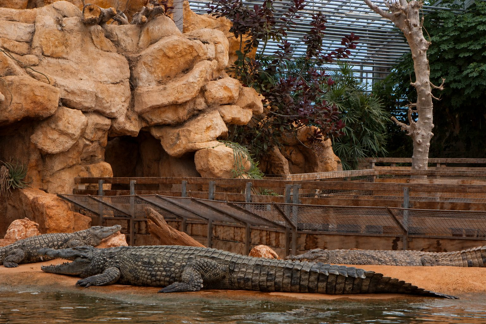

In the south of the Drôme, about 1 hour from Les Cabritas, Pierrelatte is home to Europe's largest animal park dedicated to reptiles: the Ferme aux Crocodiles, a spectacular and exotic tropical reserve.

An animal park like no other
Over 1,200 animals live in the reserve, including around 200 crocodiles and 350 free-roaming birds. Visitors can spot Nile crocodiles, gharials, Morelet's crocodiles, spectacled caimans and Komodo dragons, along with giant tortoises from the Seychelles, the Galápagos and Borneo, not forgetting tropical fish such as piranhas.
An 8,000 m² tropical greenhouse
The visit takes place inside a vast 8,000 m² covered greenhouse, complemented by a 4,000 m² outdoor botanical and play area. Commentated feedings, discovery encounters and educational activities fill the day for visitors of all ages. Allow 2 to 3 hours for the visit, depending on your pace.
Good to know before you visit
Booking online is recommended in high season to avoid queues. It's an ideal outing on a rainy day, since most of the route is covered. Allow half a day, and why not stop in Montélimar on the way back to extend the outing.
Practical info from Les Cabritas
- Distance from Flaviac: about 1h by car
- Best time to go: all year round, ideal on rainy days
- Great for: families, wildlife, rainy days
Fancy discovering Pierrelatte and the Ferme aux Crocodiles from your cottage in Ardèche?
Les Cabritas welcomes you in Flaviac, at the heart of Ardèche, for a comfortable stay with a private pool, just a stone's throw from the region's most beautiful sites.
Check availability